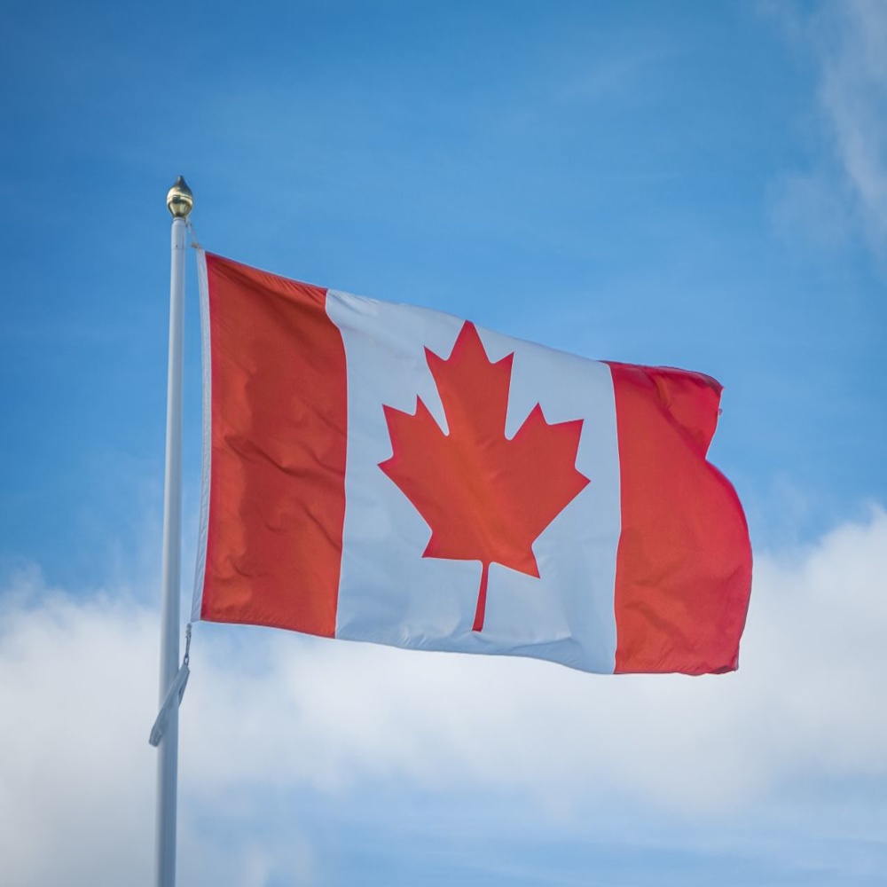

Veja os motivos do porquê eu gostar tanto desse país como um todo.
O Canadá é um dos maiores países do mundo em extensão territorial e está localizado na América do Norte. Antes da chegada dos europeus, a região era habitada por diversos povos indígenas. Ao longo dos séculos, franceses e britânicos disputaram o controle do território, influenciando sua cultura e seu idioma. Atualmente, o Canadá é conhecido por sua estabilidade, qualidade de vida e respeito à diversidade cultural.
O Canadá possui diversos pontos turísticos famosos que atraem milhões de visitantes todos os anos. As Cataratas do Niágara são uma das atrações naturais mais conhecidas do mundo. Além delas, cidades como Toronto, Vancouver, Montreal e Quebec oferecem museus, parques, arquitetura histórica e uma grande variedade de atividades culturais. Durante o inverno, muitas pessoas visitam o país para aproveitar as estações de esqui.
A culinária canadense reúne influências de diversos povos que ajudaram a formar o país. Um dos pratos mais famosos é a poutine, preparada com batatas fritas, queijo coalho e molho. O Canadá também é conhecido pela produção de xarope de bordo (maple syrup), utilizado em panquecas, waffles e diversas sobremesas. Em diferentes regiões do país, é possível encontrar pratos típicos que refletem a diversidade cultural canadense.
O Canadá possui duas línguas oficiais: inglês e francês. Além disso, é o segundo maior país do mundo em área territorial, ficando atrás apenas da Rússia. O país também abriga milhares de lagos, florestas extensas e uma rica vida selvagem, com animais como alces, ursos e castores. Sua natureza preservada é um dos principais motivos que atraem turistas de todas as partes do mundo.
"A diversidade é a nossa força."- Justin Trudeau
Retorne ao ponto inicial do site: Página Inicial